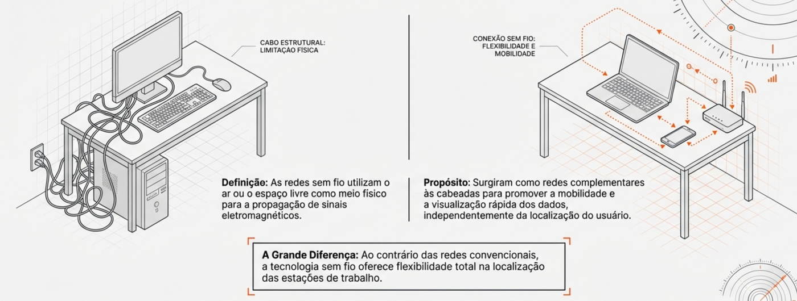
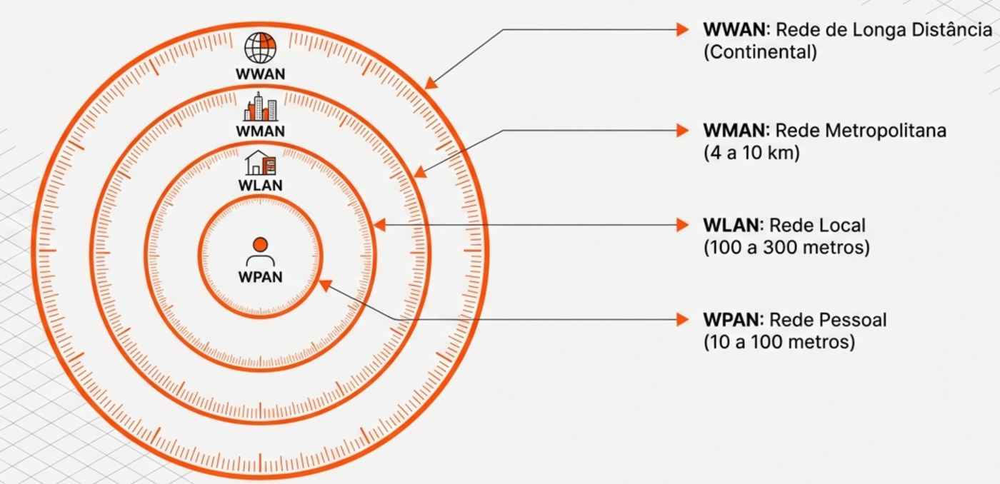
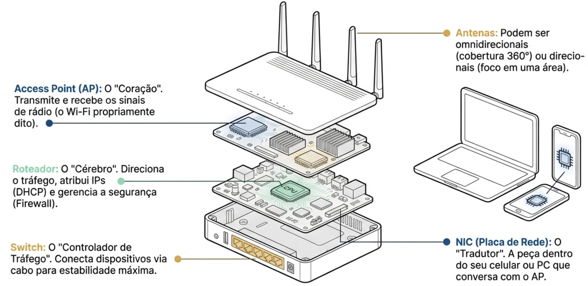

Redes sem Fio
Técnico em Redes de Computadores · IFSP Boituva · pasquati@ifsp.edu.br · v14
Comunicação de dados entre dispositivos sem a necessidade de cabos físicos, usando ondas eletromagnéticas (rádio, infravermelho) como meio de transmissão.

Rede cabeada (limitação física) x rede sem fio (flexibilidade e mobilidade)
Nota
Vamos aprofundar cada faixa de frequência e cada protocolo nas próximas aulas — hoje o foco é o panorama geral.
As redes são padronizadas pelo IEEE, que divide as tecnologias em 4 grandes grupos baseados no seu perímetro geográfico:

Classificação das redes sem fio por raio de alcance: WPAN, WLAN, WMAN e WWAN

Componentes de um roteador Wi-Fi doméstico: access point, roteador, switch, antenas e NIC
Redes sem fio no seu dia a dia
Em duplas (3 min): listem 3 redes sem fio diferentes que vocês usaram hoje e classifiquem cada uma como WPAN, WLAN, WMAN ou WWAN.
Em duplas (10 min):
Categorias de redes sem fio — aprofundamento em WPAN, WLAN, WMAN, WWAN e WLL, com exemplos e comparativo completo
Início · IFSP Boituva · Redes sem Fio